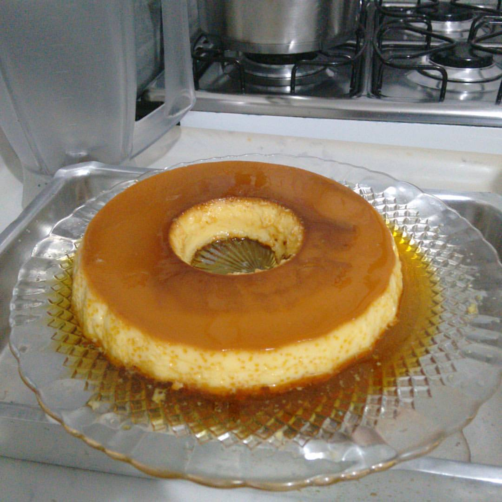

Em um dia de semana, eu inventei que iria para sua casa fazer um pudim.
Ainda estava conhecendo sua família, e o pudim era uma maneira de causar uma boa impressão.
Não me lembro se foi dessa vez que fui fazer panquecas para o almoço e fiz a base da receita de panqueca americana. A intenção era comer panquecas salgadas com carne moída. Resultado: panquecas grossas com recheio de carne moída. Aquilo foi complicado, mas você parecia se divertir com aquela situação.
Resultado: panquecas grossas com recheio de carne moida, aquilo foi complicado, mas voce parecia se divertir com aquela situação
Voltar para Namoro Passeio na Represa